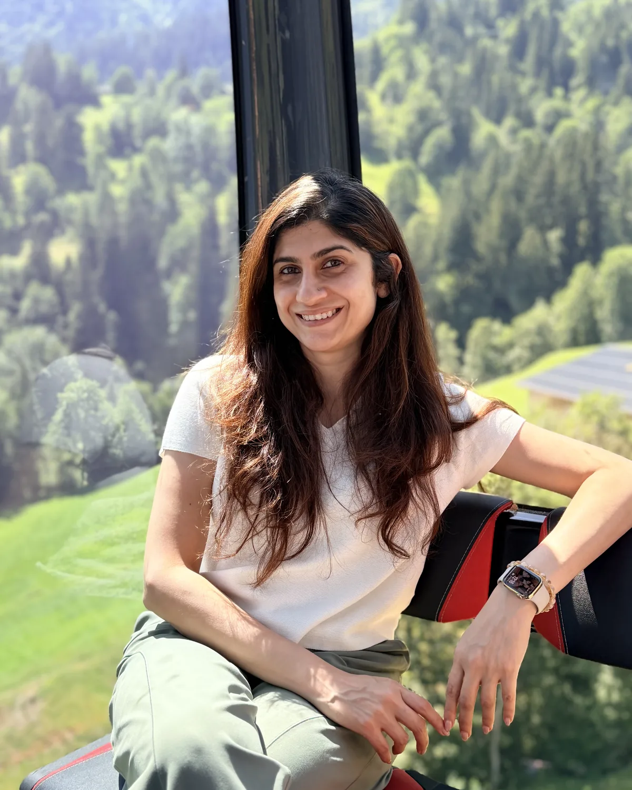

I am an integrative nutritionist and holistic wellness coach. I work on food, sleep, stress, emotions, habits and the quieter work underneath all of it, one to one and in small groups.
Below you will find the seven ways we can work together, what each one is actually for, and how to get started.
I'm Dr. Devika Kamat, a dentist turned holistic wellness practitioner, and my work is as personal as it is credentialed.
Years ago I found myself navigating 33 extra kilos, a thyroid diagnosis, emotional overwhelm, and a life-threatening surgery, all while feeling quietly lost in a life that looked fine from the outside.
Instead of managing symptoms, I chose to understand roots. I studied neuroscience, integrative nutrition, theta healing, and lifestyle medicine, applying every modality on myself first. What followed was not just physical transformation but a complete shift in energy, identity, and purpose.
Today I bring that lived experience into every session, program, and meditation I hold.
My own healing pulled from both sides, so I work with energy alongside evidence. Some people come to me for the nutrition and stay for the quieter work, and plenty arrive the other way round. Nothing I give you is templated, and I will tell you honestly if I am not the person who can help.